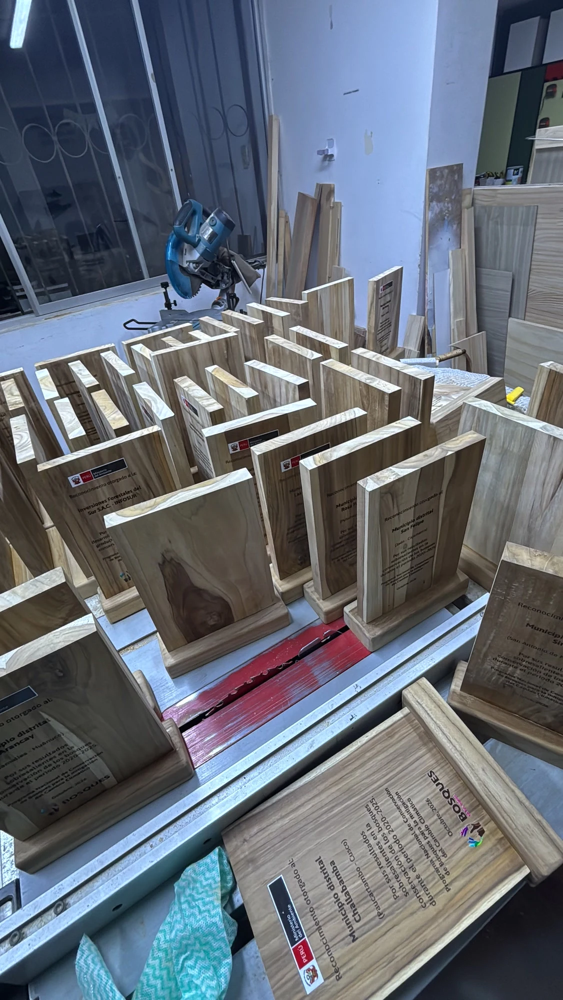
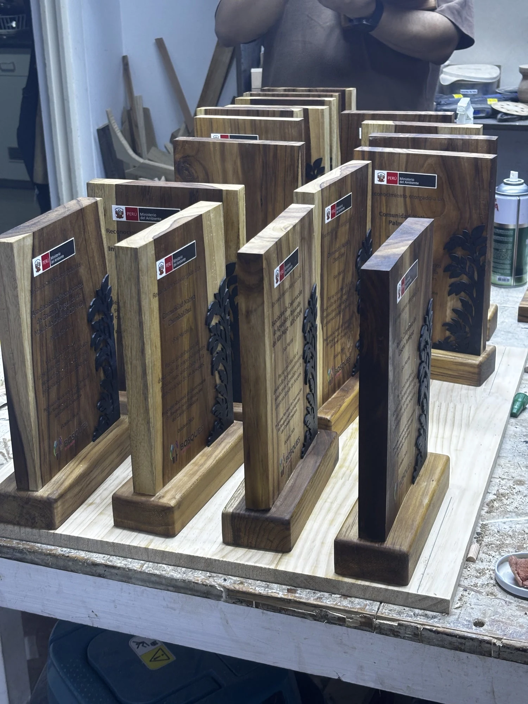
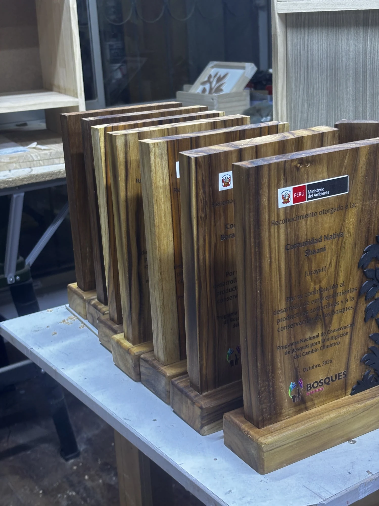

47 reconocimientos en teca para el Ministerio del Ambiente.
Placas de teca de reforestación con texto grabado, logos en UV DTF y un árbol impreso en 3D. Las fabricamos en menos de una semana para la Expo Amazónica Ucayali 2026.


Cuatro procesos en una sola placa.
Grabado personalizado para el texto, UV DTF para los logos del Ministerio y del programa, PLA impreso en 3D para el árbol y cera para el acabado.

Teca peruana de reforestación.
Teca de plantaciones de Madre de Dios, cultivada con un modelo forestal responsable y no extraída de bosque primario. El árbol es de PLA, en dos diseños, uno negro y otro verde, como lo pidió el cliente.
Madera
Habilitamos la madera de cada placa y de su base.
Grabado
Grabamos en la madera el nombre y el texto de cada premiado.
Logos
Aplicamos los logos en UV DTF sobre la placa.
Árbol
Pegamos el árbol impreso en 3D sobre la madera.
Encerado
Enceramos cada placa y su base para terminar.
¿Tienes un evento o una premiación?
Cantidad, fecha de entrega y tu logo.
Respondemos el mismo día, de lunes a viernes.